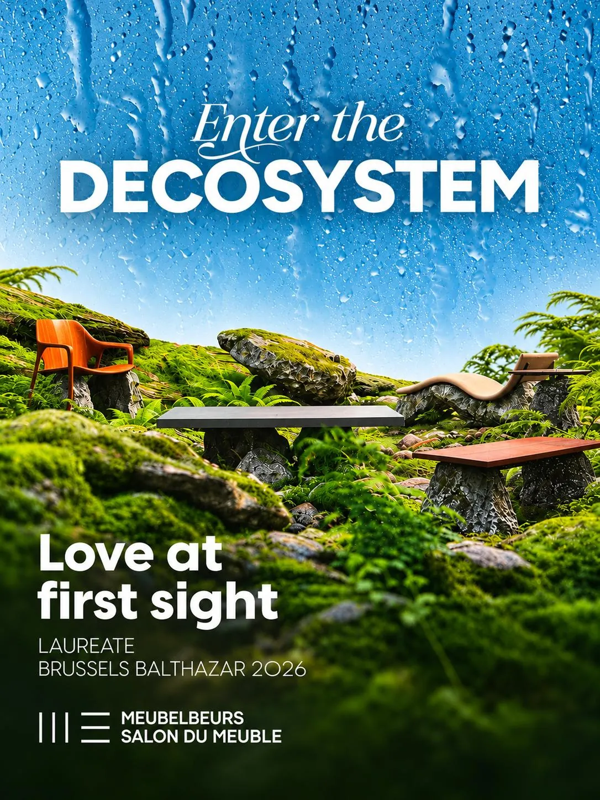
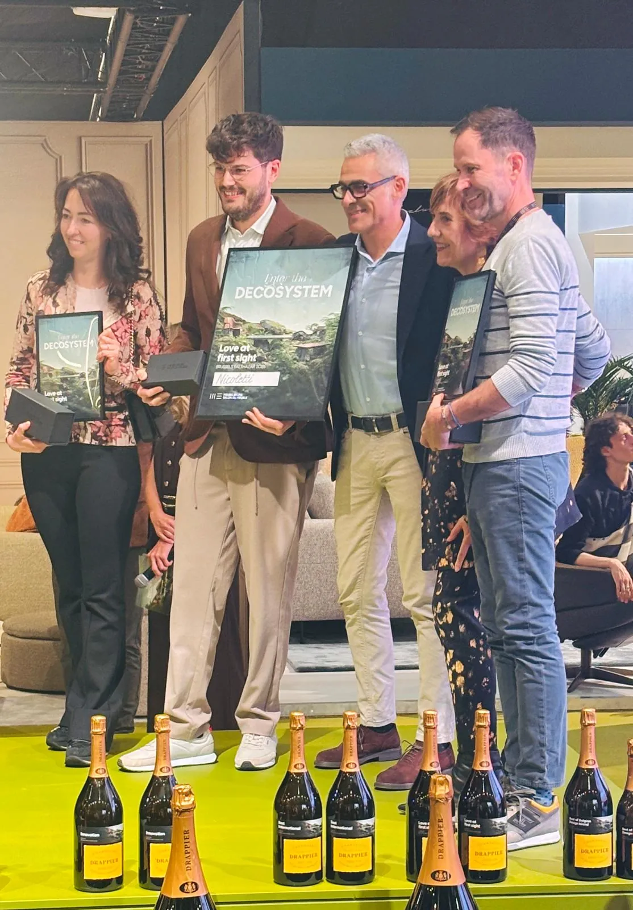
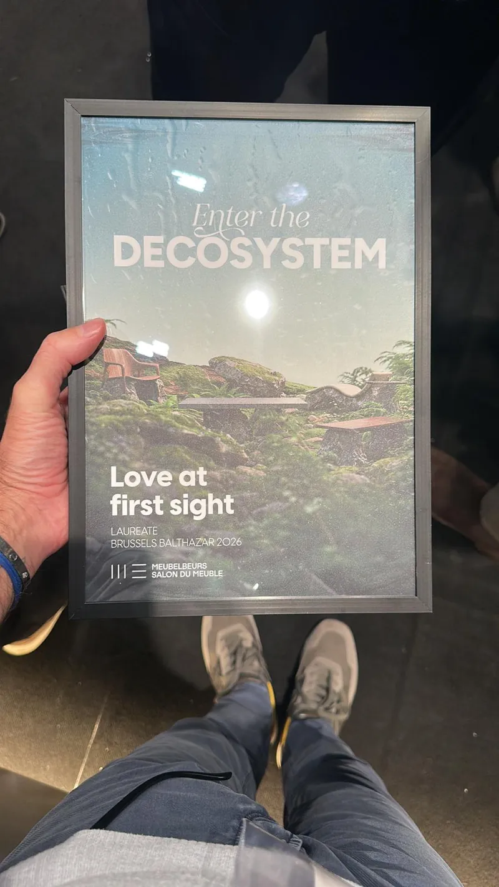
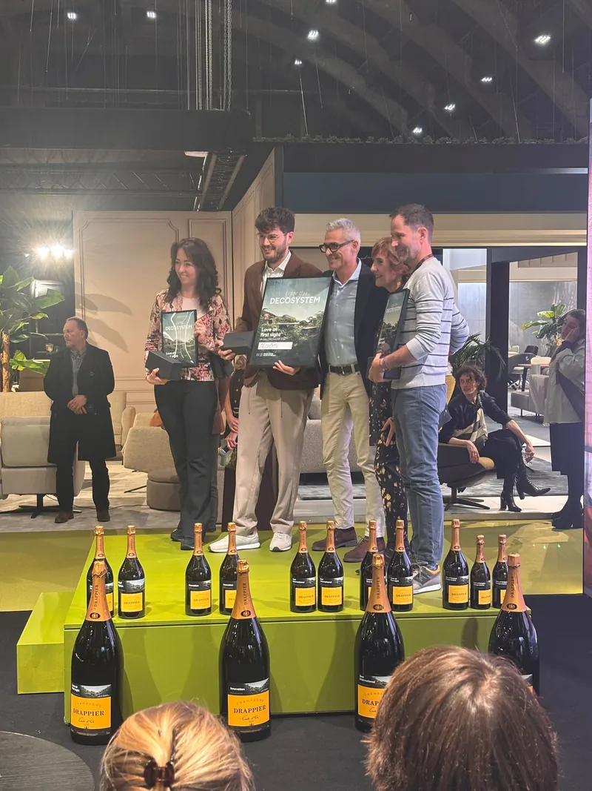
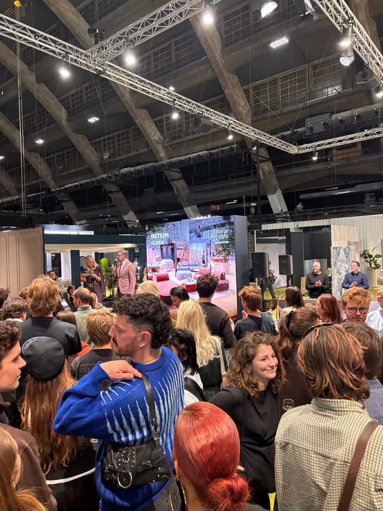

Distinction ·
Initium³ lauréat des Brussels Balthazar 2026
Au Salon du Meuble de Bruxelles, notre canapé Olwen remporte la 3e place des Brussels Balthazar 2026, dans la catégorie « Coup de foudre » (Love at first sight).
Une belle reconnaissance pour toute l’équipe, et pour ce que nous défendons : un mobilier hybride, aussi confortable dehors que dedans.
Merci au jury, aux organisateurs du salon et à toutes celles et ceux qui sont venus découvrir nos pièces.
Découvrir Olwen



